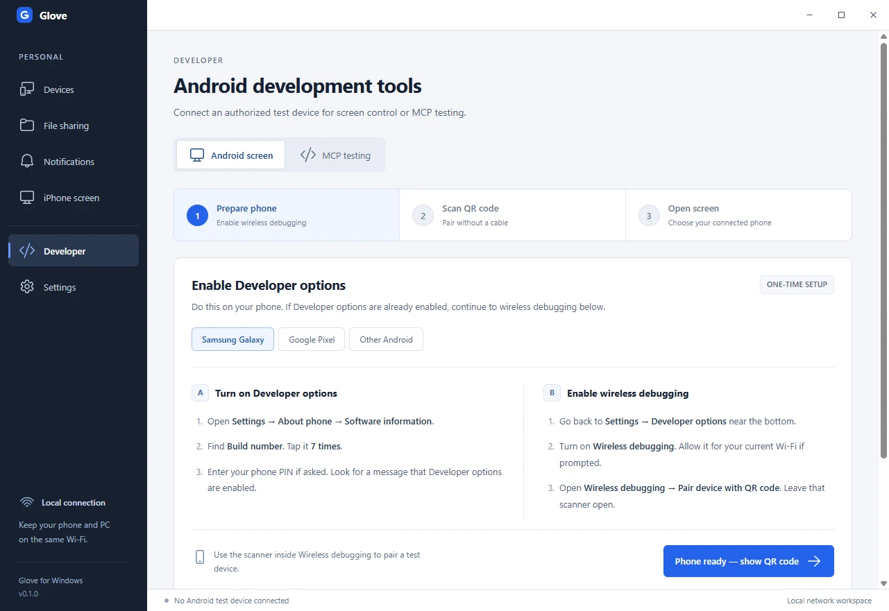
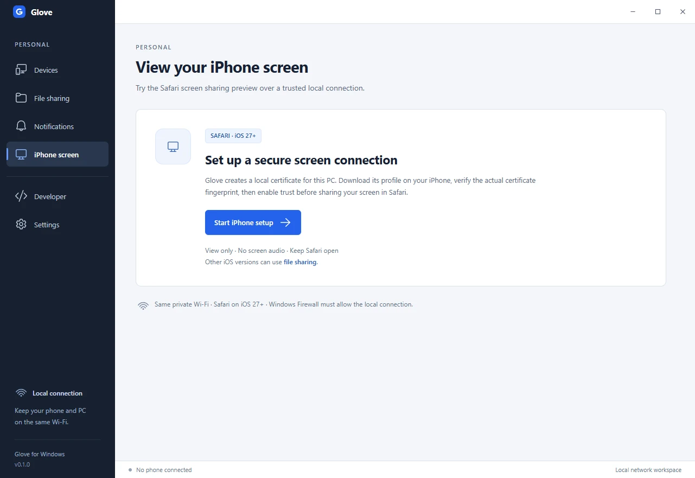
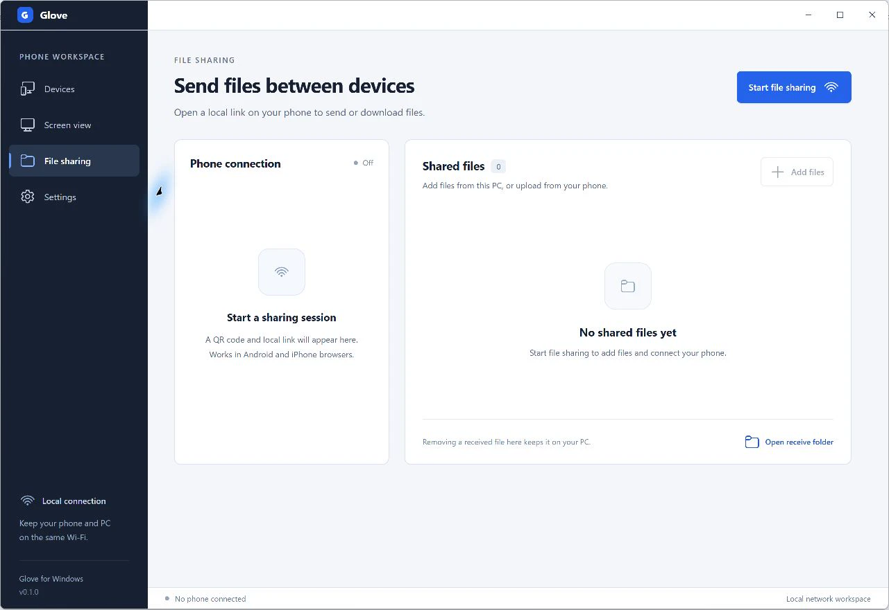

Set up Glove
Start with the Windows app. Then choose Android mirroring, the iPhone viewing preview, or file sharing.
Run the Windows development preview
Use a Windows x64 PC with Node.js 24 or newer and Git. Open PowerShell in the folder where you want the source checkout.
git clone https://github.com/arpanjot-coding/Glove.git
cd Glove
npm ci
node node_modules/electron/install.js
npm run devThe portable package command is npm run package:win. The unsigned development package opened on the Windows test PC. Your PC’s application policy determines whether it can run. Check the build and verification notes.
Pair Android over Wi-Fi with a QR code
- Download and extract the official scrcpy Windows tools. In Glove’s Settings, select the extracted folder containing
adb.exeandscrcpy.exe. - Connect your phone and PC to the same private Wi-Fi. Check your phone runs Android 11 or newer.
- Enable Developer options. On Samsung Galaxy, go to Settings → About phone → Software information → Build number. On Pixel, open Settings → About phone → Build number. Tap Build number seven times and complete the phone’s prompt.
- In Developer options, enable Wireless debugging. Approve the network prompt on your phone if it appears.
- Open Glove’s Android setup and generate a QR code. On the phone, open Wireless debugging → Pair device with QR code and scan the Glove QR. Keep the scanner open until pairing finishes.
- When Glove lists the authorized device, open its screen. Use the scrcpy window for mouse and keyboard input.
The Android pairing QR belongs in the Wireless debugging scanner. For the separate file sharing link, use the ordinary camera or enter the link in your browser.
Android’s wireless debugging guide. Find Developer options on your phone.
See the Android setup screen

Pair and connect manually
- In Wireless debugging, open Pair device with pairing code. Enter its IP address, pairing port and code in Glove’s manual pairing form.
- Return to the main Wireless debugging screen. Read the separate IP address and port for connections and enter it in Glove’s connection field.
- Select the connected device and open its screen. If the connection port changes after a restart or a network change, update it in Glove.
Keep pairing codes private. The temporary pairing port and the device’s connection port serve different steps.
Try iPhone screen viewing
This experimental flow requires a compatible Safari screen picker and your approval on the phone. The initial test target is iOS 27 or newer. The intended session shows screen video only, and physical playback testing is pending.
- Start iPhone setup from Glove’s Screen view. Open the setup link in Safari and download the local certificate profile.
- Inspect the downloaded certificate’s SHA-256 fingerprint and compare it with Glove on your PC before installing or trusting it. Cancel if you cannot inspect it or the fingerprints differ.
- Install the verified profile, then enable its trust under Settings → General → About → Certificate Trust Settings. Apple’s certificate trust instructions.
- Open the secure screen link in Safari and choose Start screen sharing. Continue if Safari offers a screen picker and you want to share the selected screen.
- End sharing when you finish. Remove the local certificate profile when you stop using it.
See the iPhone setup screen

Transfer files with a phone browser
- Open File sharing in Glove and choose Start file sharing.
- Scan the session QR with your phone’s camera, or enter the displayed address in its browser.
- Choose files on your phone to upload to the PC. Glove saves received files in Downloads → Glove by default, with a configurable receive folder. Add selected Windows files using Glove’s picker to make them available to the phone.
- Stop sharing to expire the session link. Received files remain in the receive folder.
File sharing uses unencrypted HTTP on your local network. Share the temporary link only with the intended device and use private Wi-Fi. Each upload can be up to 2 GiB.
See the file sharing screen

Troubleshoot a connection
The phone never appears after I scan the QR
Check the phone is on the same Wi-Fi, that Wireless debugging is enabled, and that Glove has the correct tools folder. Guest and managed networks can block mDNS discovery. Try manual pairing with the current ports.
The phone page will not open
Keep the file sharing session open on the PC. Choose the local address for the network the phone is using. Check whether the Wi-Fi network or firewall policy allows devices to reach the PC.
The iPhone preview shows a certificate error
Check the actual downloaded certificate against the fingerprint Glove shows. Use the verified profile and secure link for the current Glove installation. Cancel setup if verification fails.
The PC sees Android but control does not work
Confirm the phone is unlocked and authorized. Some firmware or managed-device policies limit input. Review scrcpy’s connection requirements.